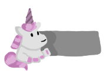

Unicorn Den

Contact
Classes
Stuff
You have not selected a unicorn. Go find some!
Hi, my name is Zoe. My hobbies include reading and drawing robots. I was born in Seattle, Washington and (although others despise the copious amount of rain there is, I like the constant trickle. My favorite place is my house because I perform mot daily activities there and it is my hub for creativity. As mentioned before, I take pleasure in drawing, especially in the medias of acyrlic paint pens, watercolor, colored pencils, etc., but my favorites to use are alcohol based markers because they are pigmented + pastel colors and fun to work with. The best medley is a cohesive combination of alcohol markers, colored pencil, and polished off with pen. Another one of my favorite hobbies is soccer, where I play centerback (but also practice all other roles) for defense. I believe I am skilled at this sport and hope to eventually reach the State A team for soccer (I am currently on the State B team).
Related to WEB class, I will code in my own time in HTML, CSS, Javascript, Python, and GML (Game Maker Language). My previous projects include games using OOP (Object Oriented Programming), a fighting simulator, and I am currently working on a video called Ghost Town. I use my free time to blend my art skills into coding to finally create these interactive projects.